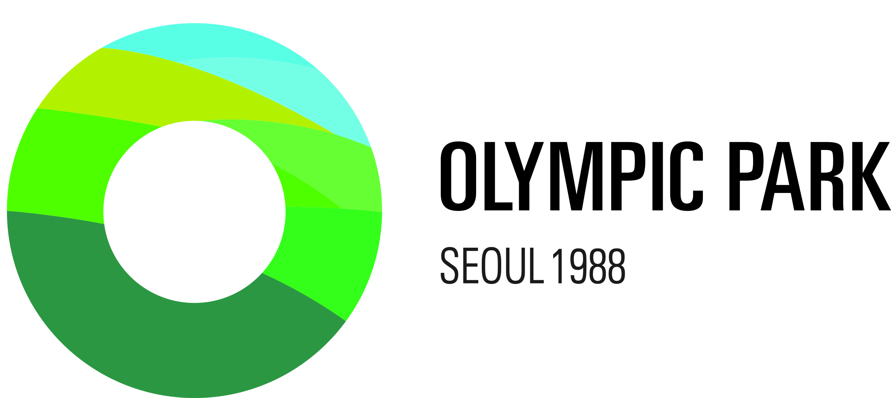
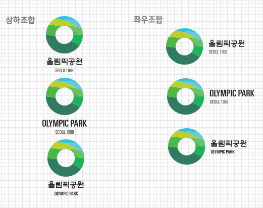
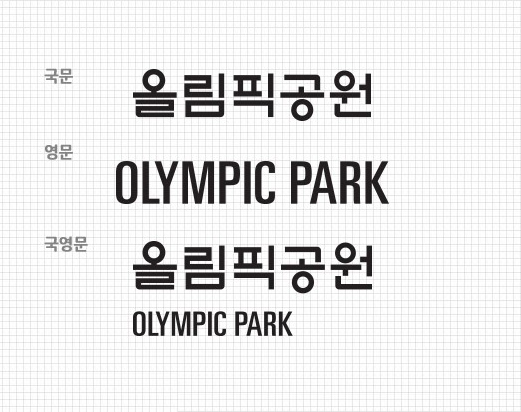

공원 PI 소개
심볼마크
PI(Park Identity)란, 공원의 고유한 정체성을 드러내는 것이며, 도심 속 자연 휴식공원을 의미한다. 올림픽공원 PI 심벌마크 형태는 명칭의 초성인 한글 자음 ‘ㅇ[이응]’을 모티브로 제작되어, 공원을 알리는 아이시스[AISAS: 주의(attention),흥미(interest), 검색(search), 행동(action), 공유(share)] 마케팅 수단으로 용이하다. 훈민정음 서체의 로고와 함께 공원의 지형적 특성을 표현하는 특징을 지니며, 레이어드 된 GREEN과 BLUE 색상으로 다채로운 공원의 이미지를 표현한다.
시그니처
올림픽공원 PI 시그니처는 심벌마크와 로고타입의 합리적인 조합으로 대내외적으로 올림픽공원을 가장 효과적으로 인식시키는 수단이다.세로형과 가로형이 있으며 국문 · 영문 · 국영문 혼용 표기가있다. 임의 변경 없이 정확하게 사용하도록 철처한 관리가 필요하다. 심벌과 로고, 역사적 정체성을 나타내는 ‘SEOUL 1988’문구가 정해진 비율로 일관되게 사용되여야 한다.
로고타입
로고타입은 심벌마크와 조합하여 사용하거나 단독으로 사용이 가능하다. 국문 · 영문 · 국영문으로 개발되었으며 최소사용규정인 9mm미만 사용을 금한다.
컬러시스템
공원의 자연을 상징하는 5가지 GREEN 색상과 2가지 BLUE 색상이 대표적이다.
-
C30 / M5 / Y100 / K0
R191 / G205 / B49 -
C60 / M0 / Y80 / K0
R109 / G192 / B103 -
C70 / M0 / Y100 / K0
R80 / G184 / B72 -
C80 / M0 / Y90 / K0
R0 / G178 / B89 -
C80 / M30 / Y70 / K15
R51 / G124 / B97 -
C55 / M0 / Y10 / K0
R99 / G202 / B225 -
C65 / M0 / Y10 / K0
R52 / G195 / B224